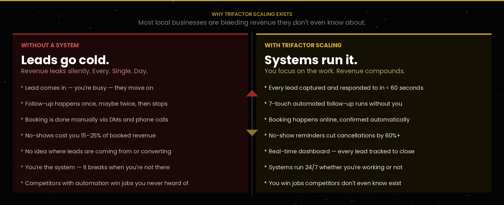
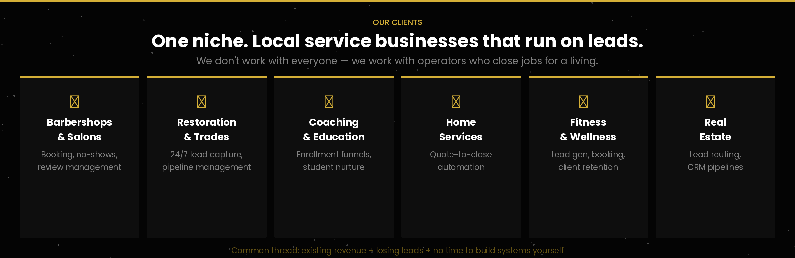
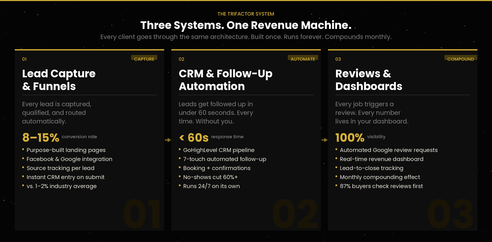
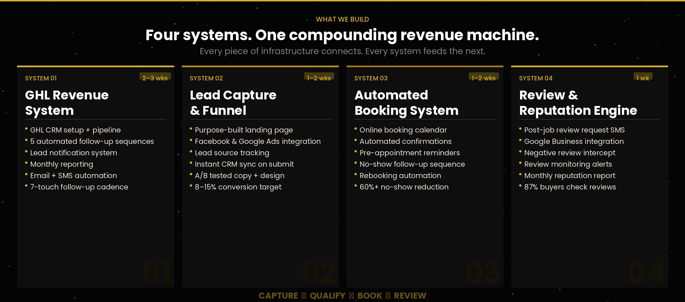
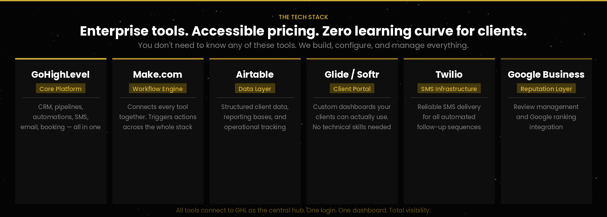
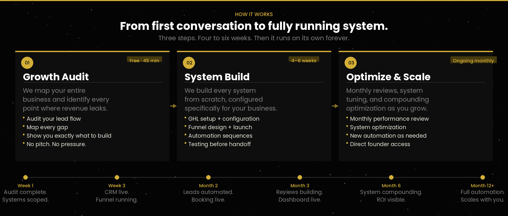

From the problem we solve, to who we serve, to the systems we build — every layer of the Growth Ops model, visualized.
Why most local businesses are bleeding revenue — and how we fix it

Local service businesses that are ready to stop manually chasing leads

Every engagement is built on the same three compounding layers

What gets built in every Growth Ops engagement

Best-in-class tools, assembled into one unified operating system

From first conversation to fully running system — exactly what to expect
